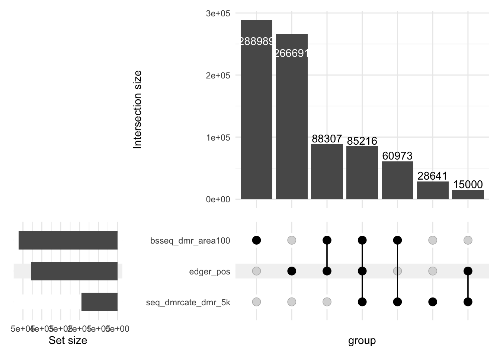
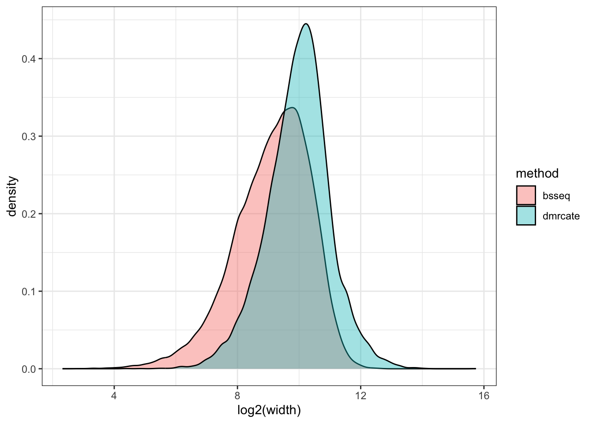
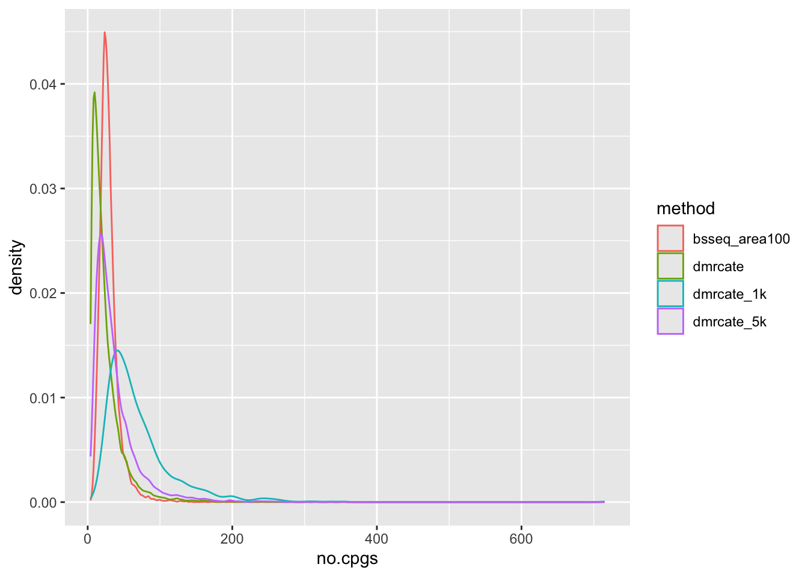
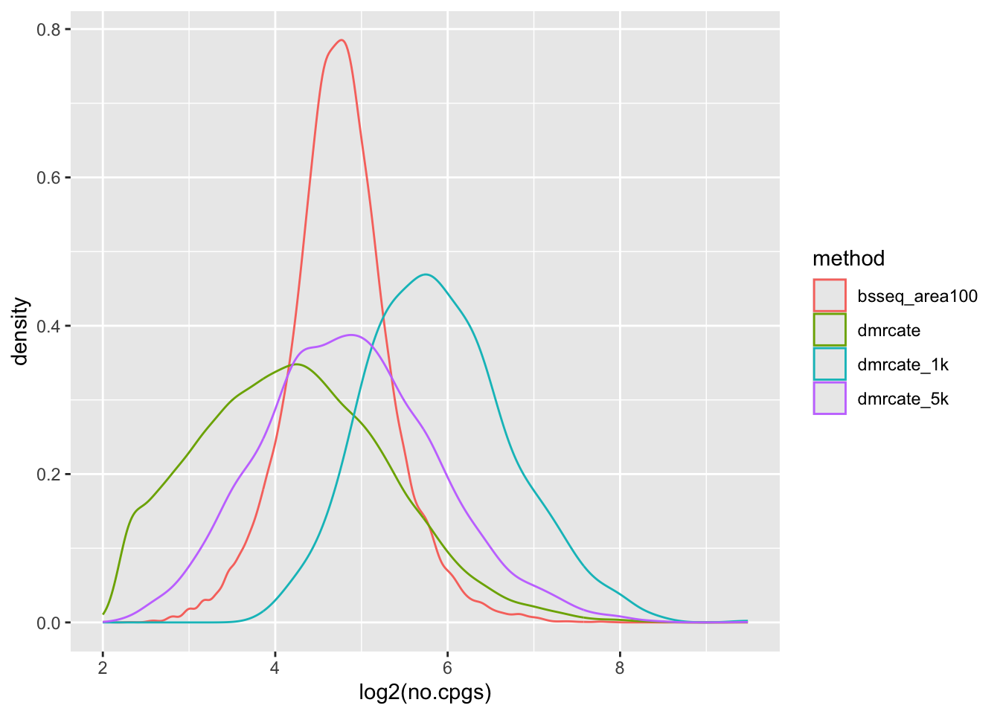
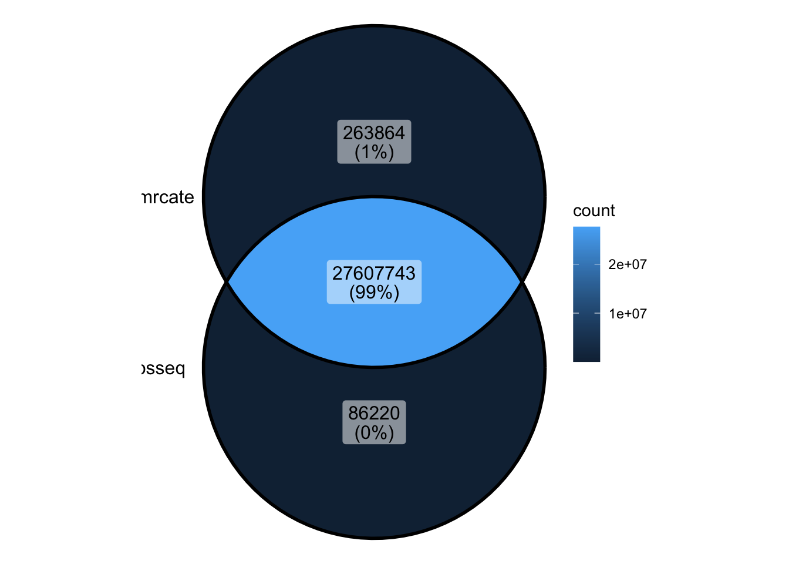

00_differentialMethylationSequencing
Caitlin Page
2024-10-25
Last updated: 2025-04-11
Checks: 7 0
Knit directory: 2_ontology_bias/analysis/
This reproducible R Markdown analysis was created with workflowr (version 1.7.1). The Checks tab describes the reproducibility checks that were applied when the results were created. The Past versions tab lists the development history.
Great! Since the R Markdown file has been committed to the Git repository, you know the exact version of the code that produced these results.
Great job! The global environment was empty. Objects defined in the global environment can affect the analysis in your R Markdown file in unknown ways. For reproduciblity it’s best to always run the code in an empty environment.
The command set.seed(20240905) was run prior to running
the code in the R Markdown file. Setting a seed ensures that any results
that rely on randomness, e.g. subsampling or permutations, are
reproducible.
Great job! Recording the operating system, R version, and package versions is critical for reproducibility.
Nice! There were no cached chunks for this analysis, so you can be confident that you successfully produced the results during this run.
Great job! Using relative paths to the files within your workflowr project makes it easier to run your code on other machines.
Great! You are using Git for version control. Tracking code development and connecting the code version to the results is critical for reproducibility.
The results in this page were generated with repository version ae3cb70. See the Past versions tab to see a history of the changes made to the R Markdown and HTML files.
Note that you need to be careful to ensure that all relevant files for
the analysis have been committed to Git prior to generating the results
(you can use wflow_publish or
wflow_git_commit). workflowr only checks the R Markdown
file, but you know if there are other scripts or data files that it
depends on. Below is the status of the Git repository when the results
were generated:
Ignored files:
Ignored: .DS_Store
Ignored: .Rhistory
Ignored: .Rproj.user/
Ignored: analysis/.DS_Store
Ignored: analysis/figure/
Ignored: analysis/input/
Ignored: analysis/mc_h1/
Ignored: analysis/myEnvironment.RData
Ignored: data/cell_line_wgbs/
Ignored: data/comp_bio_challenge/
Ignored: data/gene_sets/
Ignored: data/long_read/
Ignored: data/microarray/
Ignored: data/wgbs/
Ignored: output/figures/
Ignored: renv/library/
Ignored: renv/staging/
Untracked files:
Untracked: analysis/00_bugsLearning.Rmd
Untracked: analysis/04_swapInputs.Rmd
Untracked: analysis/05_vizResults.Rmd
Untracked: analysis/clusterlog.txt
Untracked: code/ChatGPT_translate.html
Untracked: code/ChatGPT_translate_files/
Untracked: code/background.R
Unstaged changes:
Modified: .gitignore
Modified: 2_ontology_bias.Rproj
Modified: _workflowr.yml
Modified: analysis/00_exploreCpGGST.Rmd
Modified: analysis/03_genesToGST.Rmd
Modified: analysis/03_howToGST.Rmd
Modified: analysis/03_runGST.Rmd
Modified: analysis/04a_compareGSTResults.Rmd
Modified: analysis/06_decisionSummary.Rmd
Modified: analysis/index.Rmd
Modified: code/mmGST.R
Modified: code/runSeqDmMethods.R
Modified: renv.lock
Modified: renv/.gitignore
Modified: renv/activate.R
Modified: renv/settings.json
Note that any generated files, e.g. HTML, png, CSS, etc., are not included in this status report because it is ok for generated content to have uncommitted changes.
These are the previous versions of the repository in which changes were
made to the R Markdown
(analysis/00_differentialMethylationSequencing.Rmd) and
HTML (docs/00_differentialMethylationSequencing.html)
files. If you’ve configured a remote Git repository (see
?wflow_git_remote), click on the hyperlinks in the table
below to view the files as they were in that past version.
| File | Version | Author | Date | Message |
|---|---|---|---|---|
| Rmd | ae3cb70 | Caitlin Page | 2025-04-11 | wflow_publish("00_differentialMethylationSequencing.Rmd") |
| html | 67fb63b | Caitlin Page | 2025-04-09 | Build site. |
| Rmd | 50cb92f | Caitlin Page | 2025-04-09 | wflow_publish("00_differentialMethylationSequencing.Rmd") |
| Rmd | f19ca4d | Caitlin Page | 2025-03-31 | different methods |
| Rmd | b149ec3 | Caitlin Page | 2025-02-21 | dmrcate dm - bc can also do for array |
| Rmd | 5985285 | Caitlin Page | 2024-11-12 | init commit |
Data
The data used in this analysis is B cell types and NK cell types from WGBS, under the hg19 genome annotation. GSE186458
- B cell type: 3 samples
- NK cell type: 3 samples
Further description can be found here
Packages used
library(DMRcate)
library(bsseq)
library(edgeR)
library(limma)
library(BiocParallel)
library(BSgenome.Hsapiens.UCSC.hg19)
library(Biostrings)
library(plyranges)
library(dplyr)
library(ggplot2)
library(ggVennDiagram)
library(ComplexUpset)Description
To understand the inputs of Gene Set Testing, I explored different differential methylation methods. I focussed on methods available within Bioconductor, and ones that were widely used. I tried the following methods: * bsseq Paper Years in Bioc: 12.5
Obtain counts
# get the positions of cg sites
seq_names <- seqnames(BSgenome.Hsapiens.UCSC.hg19)[1:25]
anno_seq <- lapply(seq_names, function(x) {
cbind(data.frame(matchPattern("CG", BSgenome.Hsapiens.UCSC.hg19[[x]])),
seqnames = x)}) %>%
dplyr::bind_rows()
anno_seq <- anno_seq %>% mutate(pos = paste0(seqnames, "-", start)) %>%
relocate(pos, seqnames)
# NK counts
fname <- "../data/wgbs/GSM5652299_Blood-NK-Z000000TM.beta"
N <- file.info(fname)$size
beta_nk <- data.frame(matrix(readBin(fname, "integer", N, size = 1, signed = FALSE), N / 2, 2, byrow=TRUE))
fname <- "../data/wgbs/GSM5652300_Blood-NK-Z000000U1.beta"
N <- file.info(fname)$size
beta_nk <- cbind(beta_nk, data.frame(matrix(readBin(fname, "integer", N, size = 1, signed = FALSE), N / 2, 2, byrow=TRUE)))
fname <- "../data/wgbs/GSM5652301_Blood-NK-Z000000UF.beta"
N <- file.info(fname)$size
beta_nk <- cbind(beta_nk, data.frame(matrix(readBin(fname, "integer", N, size = 1, signed = FALSE), N / 2, 2, byrow=TRUE)))
colnames(beta_nk) <- c("M_TM", "C_TM", "M_U1", "C_U1", "M_UF", "C_UF")
beta_nk <- cbind(anno_seq[,1:4], beta_nk)
# B counts
fname <- "../data/wgbs/GSM5652316_Blood-B-Z000000TX.beta"
N <- file.info(fname)$size
beta_b <- data.frame(matrix(readBin(fname, "integer", N, size = 1, signed = FALSE), N / 2, 2, byrow=TRUE))
fname <- "../data/wgbs/GSM5652317_Blood-B-Z000000UB.beta"
N <- file.info(fname)$size
beta_b <- cbind(beta_b, data.frame(matrix(readBin(fname, "integer", N, size = 1, signed = FALSE), N / 2, 2, byrow=TRUE)))
fname <- "../data/wgbs/GSM5652318_Blood-B-Z000000UR.beta"
N <- file.info(fname)$size
beta_b <- cbind(beta_b, data.frame(matrix(readBin(fname, "integer", N, size = 1, signed = FALSE), N / 2, 2, byrow=TRUE)))
colnames(beta_b) <- c("M_TX", "C_TX", "M_UB", "C_UB", "M_UR", "C_UR")
beta_b <- cbind(anno_seq[,1:4], beta_b)
# add unmeth counts
beta_nk <- beta_nk %>% mutate(Un_TM = C_TM - M_TM, Un_U1 = C_U1 - M_U1, Un_UF = C_UF - M_UF)
beta_b <- beta_b %>% mutate(Un_TX = C_TX - M_TX, Un_UB = C_UB - M_UB, Un_UR = C_UR - M_UR)
# combine
colnames(beta_b)[5:13] <- paste0("b_", colnames(beta_b)[5:13])
colnames(beta_nk)[5:13] <- paste0("nk_", colnames(beta_nk)[5:13])
wgbs_counts <- cbind(beta_nk, beta_b[,5:13])
#saveRDS(wgbs_counts, "../output/wgbs_counts.rds")nrow(wgbs_counts)[1] 28217448head(wgbs_counts) pos seqnames start end nk_M_TM nk_C_TM nk_M_U1 nk_C_U1 nk_M_UF
1 chr1-10469 chr1 10469 10470 27 32 41 48 21
2 chr1-10471 chr1 10471 10472 25 35 45 50 19
3 chr1-10484 chr1 10484 10485 29 35 42 50 26
4 chr1-10489 chr1 10489 10490 33 34 46 51 26
5 chr1-10493 chr1 10493 10494 29 36 49 53 28
6 chr1-10497 chr1 10497 10498 33 37 52 54 30
nk_C_UF nk_Un_TM nk_Un_U1 nk_Un_UF b_M_TX b_C_TX b_M_UB b_C_UB b_M_UR b_C_UR
1 30 5 7 9 31 34 19 20 40 44
2 30 10 5 11 26 36 20 21 35 44
3 32 6 8 6 34 39 22 26 46 51
4 33 1 5 7 36 41 25 27 43 50
5 33 7 4 5 37 43 24 27 46 52
6 34 4 2 4 39 43 28 29 52 57
b_Un_TX b_Un_UB b_Un_UR
1 3 1 4
2 10 1 9
3 5 4 5
4 5 2 7
5 6 3 6
6 4 1 5Differential Methylation Analysis
bsseq pre-processing: bsseq and bsmooth objects
## set up
wgbs_counts <- wgbs_counts %>% filter(!seqnames %in% c("chrX", "chrY", "chrM"))
m_df <- wgbs_counts[,c(5,7,9,14,16,18)]
colnames(m_df) <- colnames(m_df) %>% gsub("_M", "", .)
coverage_df <- wgbs_counts[,c(6,8,10,15,17,19)]
colnames(coverage_df) <- colnames(coverage_df) %>% gsub("_C", "", .)
sample_stuff <- cbind(Type = c("nk", "nk", "nk", "b", "b", "b")) %>% data.frame()
rownames(sample_stuff) <- colnames(m_df)
## make BSseq object
bseq_nk_vs_b_all <- BSseq(M = as.matrix(m_df),
Cov = as.matrix(coverage_df), pData = sample_stuff,
chr = beta_all$seqnames, pos = as.numeric(beta_all$start),
sampleNames = colnames(m_df))
## BSmooth by sample - so it doesn't crash
bsmooth1 <- BSmooth(BSseq = bseq_nk_vs_b_all[,1], BPPARAM = MulticoreParam(workers = 6), verbose = TRUE)
bsmooth2 <- BSmooth(BSseq = bseq_nk_vs_b_all[,2], BPPARAM = MulticoreParam(workers = 6), verbose = TRUE)
bsmooth3 <- BSmooth(BSseq = bseq_nk_vs_b_all[,3], BPPARAM = MulticoreParam(workers = 6), verbose = TRUE)
bsmooth4 <- BSmooth(BSseq = bseq_nk_vs_b_all[,4], BPPARAM = MulticoreParam(workers = 6), verbose = TRUE)
bsmooth5 <- BSmooth(BSseq = bseq_nk_vs_b_all[,5], BPPARAM = MulticoreParam(workers = 6), verbose = TRUE)
bsmooth6 <- BSmooth(BSseq = bseq_nk_vs_b_all[,6], BPPARAM = MulticoreParam(workers = 6), verbose = TRUE)
bsmooth_obj <- combine(bsmooth1, bsmooth2, bsmooth3, bsmooth4, bsmooth5, bsmooth6)
## filter
bseq.cov <- getCoverage(bsmooth_obj)
keep <- which(rowSums(bseq.cov[, bsmooth_obj$Type == "nk"] >= 2) >= 2 &
rowSums(bseq.cov[, bsmooth_obj$Type == "b"] >= 2) >= 2)
length(keep)
bsmooth_obj <- bsmooth_obj[keep,]
saveRDS(bsmooth_obj, "../output/bsmooth_obj.rds")bsseq
## testing
bsseq.tstat <- BSmooth.tstat(bsmooth_obj, group1 = c("nk_TM", "nk_U1", "nk_UF"),
group2 = c("b_TX", "b_UB", "b_UR"),
estimate.var = "group2",
local.correct = TRUE,
verbose = TRUE, mc.cores = 6)
bsseq_res <- bsseq.tstat@stats %>% data.frame() %>%
mutate(seqnames = data.frame(bsseq.tstat@gr)$seqnames,
start = data.frame(bsseq.tstat@gr)$start,
end = start, position = paste0(seqnames, "-", start)) %>%
relocate(position)
saveRDS(bsseq_res, "../output/bsseq_res.rds")
## dmrs
bsseq_dmrs <- dmrFinder(bseq.tstat)
# filter the dmrs
bsseq_dmrs <- subset(bsseq_dmrs, n >= 3 & abs(meanDiff) >= 0.1)
colnames(bsseq_dmrs)[1] <- "seqnames"
bsseq_dmrs <- bsseq_dmrs %>%
mutate(position = paste0(seqnames, "-", start)) %>% relocate(position)
bsseq_dmrs$rank <- 1:nrow(bsseq_dmrs)
saveRDS(bsseq_dmrs, "../output/bsseq_dmrs.rds")nrow(bsseq_res)[1] 26141562head(bsseq_res) position rawSds tstat.sd group2.means group1.means tstat
1 chr1-10469 0.03810513 0.02830937 0.8974952 0.8654874 -1.130643
2 chr1-10471 0.03767339 0.02932521 0.8979726 0.8648112 -1.130814
3 chr1-10484 0.03509357 0.02993758 0.9008921 0.8603429 -1.354458
4 chr1-10489 0.03420441 0.03027659 0.9019333 0.8586008 -1.431223
5 chr1-10493 0.03353366 0.03054339 0.9027350 0.8572023 -1.490753
6 chr1-10497 0.03289861 0.03078513 0.9035093 0.8558021 -1.549685
tstat.corrected seqnames start end
1 -0.2440643 chr1 10469 10469
2 -0.2445427 chr1 10471 10471
3 -0.4701852 chr1 10484 10484
4 -0.5477191 chr1 10489 10489
5 -0.6078640 chr1 10493 10493
6 -0.6674112 chr1 10497 10497nrow(bsseq_dmrs)[1] 69858head(bsseq_dmrs) position seqnames start end idxStart idxEnd cluster n
90156 chr7-158595973 chr7 158595973 158597702 11824761 11824875 2008166 115
97889 chr11-314783 chr11 314783 318111 15588281 15588431 287130 151
68822 chr2-8418248 chr2 8418248 8424108 2314827 2314938 918827 112
56322 chr19-1646759 chr19 1646759 1650002 23525162 23525269 889718 108
54340 chr17-75316243 chr17 75316243 75321648 22648912 22649108 823284 197
51278 chr16-88600393 chr16 88600393 88601461 21620676 21620832 779278 157
width invdensity areaStat maxStat meanDiff group1.mean group2.mean
90156 1730 15.043478 -2448.388 -2.608966 -0.7669851 0.1469680 0.9139531
97889 3329 22.046358 -2381.623 -3.101464 -0.6354995 0.0890310 0.7245305
68822 5861 52.330357 -2374.264 -4.032202 -0.6338283 0.2448161 0.8786444
56322 3244 30.037037 1998.382 24.989896 0.6892998 0.9072248 0.2179250
54340 5406 27.441624 1987.636 25.101076 0.3506880 0.7423341 0.3916461
51278 1069 6.808917 1985.715 16.149314 0.3906955 0.5600847 0.1693891
tstat.sd direction
90156 0.03370352 hypo
97889 0.02951290 hypo
68822 0.03179347 hypo
56322 0.03597023 hyper
54340 0.03016071 hyper
51278 0.02959988 hyperDMRcate
- takes in smoothed samples from bsseq
- also has the same filtering recommendations as bsseq
bsmooth_obj
tissue <- factor(c("nk", "nk", "nk", "b", "b", "b"), levels = c("nk", "b"))
tissue
#Regular matrix design
design <- model.matrix(~tissue)
design
methdesign <- modelMatrixMeth(design)
methdesign
seq_annot <- sequencing.annotate(bsmooth_obj, methdesign, all.cov = TRUE,
coef = 8, fdr=0.05)
#saveRDS(seq_annot, "../output/dmrcate_seq_anno.rds")
seq_dmrcate.res <- dmrcate(seq_annot, C=2, min.cpgs = 5)
dmrcate_seq_dmr <- extractRanges(seq_dmrcate.res, genome = "hg19")
dmrcate_seq_dmr <- dmrcate_seq_dmr %>% data.frame()
dmrcate_seq_anno <- seq_annot@ranges %>% data.frame()
#saveRDS(dmrcate_seq_dmr, "../output/dmrcate_seq_dmr.rds")nrow(dmrcate_seq_anno)[1] 25995712head(dmrcate_seq_anno) seqnames start end width strand stat diff ind.fdr is.sig
1 chr1 10469 10469 1 * -1.8140361 -1.3572918 0.6992461 FALSE
2 chr1 10471 10471 1 * -0.7284539 -0.6399003 0.9389270 FALSE
3 chr1 10484 10484 1 * -0.7000213 -0.5063787 0.9425177 FALSE
4 chr1 10489 10489 1 * 0.3100487 0.2549802 0.9833920 FALSE
5 chr1 10493 10493 1 * -0.1626419 -0.1219368 0.9929045 FALSE
6 chr1 10497 10497 1 * -0.2503823 -0.1957677 0.9876618 FALSEnrow(dmrcate_seq_dmr)[1] 13542head(dmrcate_seq_dmr) seqnames start end width strand no.cpgs min_smoothed_fdr
1 chr1 167434091 167488800 54710 * 715 0
2 chr11 113932115 113948338 16224 * 336 0
3 chr19 8627507 8641759 14253 * 316 0
4 chr12 10456885 10466669 9785 * 127 0
5 chr10 72355543 72364759 9217 * 198 0
6 chr17 45811354 45822029 10676 * 208 0
Stouffer HMFDR Fisher maxdiff meandiff
1 0.000000e+00 0.0002481331 0.000000e+00 -11.311593 -5.643222
2 0.000000e+00 0.0007797373 7.262418e-315 -9.825363 -4.674082
3 7.545644e-243 0.0005360353 1.003690e-278 -10.136485 -4.386791
4 3.058706e-290 0.0001100756 4.325037e-267 -10.604822 -7.088274
5 1.123502e-263 0.0002704979 4.449882e-261 -9.472313 -5.302931
6 3.710160e-216 0.0005478491 2.540144e-232 -9.936832 -4.962632
overlapping.genes
1 AKR1D1P1, CD247
2 ZBTB16
3 MYO1F
4 KLRD1
5 PRF1
6 TBX21dmrseq
- Uses bsseq object as input
- dmrseq failed.
bseq_nk_vs_b_all
loci.idx <- which(DelayedMatrixStats::rowSums2(getCoverage(bseq_nk_vs_b_all, type="Cov")==0) == 0)
sample.idx <- which(pData(bseq_nk_vs_b_all)$Type %in% c("nk", "b"))
bs.filtered <- bseq_nk_vs_b_all[loci.idx, sample.idx]
testCovariate <- "Type"
regions <- dmrseq(bs=bs.filtered,
cutoff = 0.05,
testCovariate=testCovariate) # failed with errorDSS
- Uses bsseq object as input
- DMLtest failed to finish. Unclear as to why, expected to be too computationally intensive
bseq_nk_vs_b_all
dss_dmlTest_all <- DMLtest(bseq_nk_vs_b_all,
group1=c("nk_TM", "nk_U1", "nk_UF"),
group2 = c("b_TX", "b_UB", "b_UR"),
smoothing = TRUE, BPPARAM = BatchtoolsParam()) #failed
dss_dmrs_pos_filt <- callDMR(dss_dmlTest_nk_vs_b_pos_filt, p.threshold=0.05)
dss_dmrs <- callDMR(dss_dmlTest_nk_vs_b, p.threshold=0.05)edgeR
# pre-processing
edge_matrix <- wgbs_counts[,c(5,11,7,12,9,13,14,20,16,21,18,22)]
colnames(edge_matrix) <- c(
"NK1.Me", "NK1.Un", "NK2.Me", "NK2.Un", "NK3.Me", "NK3.Un",
"B1.Me", "B1.Un", "B2.Me", "B2.Un", "B3.Me", "B3.Un")
rownames(edge_matrix) <- wgbs_counts$pos
edge_matrix <- edge_matrix[!grepl("chrX", rownames(edge_matrix)),]
edge_matrix <- edge_matrix[!grepl("chrY", rownames(edge_matrix)),]
sample <- gl(6,2,12)
methylation <- gl(2,1,12, labels=c("Me","Un"))
condition <- gl(2,6,12, labels=c("NK", "B"))
edge_sample_info <- cbind(sample, methylation, condition)
rownames(edge_sample_info) <- colnames(edge_matrix)
data.frame(edge_sample_info)
edge_dge <- DGEList(as.matrix(edge_matrix), samples = data.frame(edge_sample_info),
group = c(
"NK", "NK", "NK", "NK", "NK", "NK",
"B", "B", "B", "B", "B", "B"))
edge_coverage <- edge_dge$counts[, c(1,3,5,7,9,11)] + edge_dge$counts[, c(2,4,6,8,10,12)]
head(edge_coverage)
keep <- rowSums(edge_coverage >= 8) == 6
edge_dge <- edge_dge[keep,,keep.lib.sizes=FALSE]
edge_dge$samples
edge_total_lib_size <- filter(edge_dge$samples, methylation==1)$lib.size +
filter(edge_dge$samples, methylation==2)$lib.size
edge_dge$samples$lib.size <- rep(edge_total_lib_size, each=2)
edge_dge$samples
# testing
edge_samples <- cbind(Group = c("NK", "NK", "NK", "B", "B", "B")) %>% data.frame()
rownames(edge_samples) <- c("NK1", "NK2", "NK3", "B1", "B2", "B3")
edge_samples <- edge_samples %>% mutate(Group = as.factor(Group))
edge_design <- model.matrix(~0 + Group, data = edge_samples)
colnames(edge_design) <- c("B", "NK")
edge_design <- modelMatrixMeth(edge_design)
edge_dge <- estimateDisp(edge_dge, edge_design, trend="none")
edge_fit <- glmFit(edge_dge, edge_design)
edge_contrasts <- makeContrasts(NK - B,
levels=edge_design)
edge_lrt <- glmLRT(edge_fit, contrast=edge_contrasts)
edge_res <- topTags(edge_lrt, n = Inf)
edge_res <- edge_res$table %>% mutate(signif.05 = ifelse(FDR <= 0.05, TRUE, FALSE))
#saveRDS(edge_res, "../output/edge_res.rds")nrow(edge_res)[1] 24287284head(edge_res) logFC logCPM LR PValue FDR signif.05
chr2-102985195 -14.57712 -4.792479 129.4411 5.430423e-30 1.318902e-22 TRUE
chr8-60100608 -15.06021 -4.923078 127.5833 1.384675e-29 1.681499e-22 TRUE
chr22-18077698 14.74929 -5.060096 120.3964 5.180342e-28 2.369875e-21 TRUE
chr5-156608059 -14.72724 -5.081965 120.2161 5.673161e-28 2.369875e-21 TRUE
chr12-10432700 -14.70074 -5.075146 120.2159 5.673586e-28 2.369875e-21 TRUE
chr7-127645445 14.72284 -5.078940 120.1536 5.854606e-28 2.369875e-21 TRUECompare approaches
- All methods were run on the HPC at PeterMac because they are very computationally intense.
- Despite this, DSS and dmrseq still failed - unclear as to why, so we moved on.
- The edgeR workflow does not identify DMRs
compare_dm <- wgbs_counts[,1:4]
bsseq_dmrs_filt <- bsseq_dmrs %>% filter(abs(areaStat) >= 100)
overlap_dm <- find_overlaps(as_granges(dmrcate_seq_dmr[1:5000,]), as_granges(compare_dm)) %>% data.frame()
compare_dm <- compare_dm %>% mutate(seq_dmrcate_dmr_5k = ifelse(pos %in% overlap_dm$pos, TRUE, FALSE))
overlap_dm <- find_overlaps(as_granges(bsseq_dmrs_filt), as_granges(compare_dm)) %>% data.frame()
compare_dm <- compare_dm %>% mutate(bsseq_dmr_area100 = ifelse(pos %in% overlap_dm$pos, TRUE, FALSE))
compare_dm <- compare_dm %>% mutate(edger_pos = edge_res[match(.$pos, rownames(edge_res)), "signif.05"])upset(filter(compare_dm, seq_dmrcate_dmr_5k != FALSE| bsseq_dmr_area100 != FALSE| edger_pos != FALSE), intersect = colnames(compare_dm)[5:7])Warning in upset_data(data, intersect, mode = mode, encode_sets = encode_sets,
: Detected missing values in the columns indicating sets, coercing to FALSE
Compare bsseq and DMRCate
rbind(cbind(width = bsseq_dmrs$width, method = "bsseq"),
cbind(width = dmrcate_seq_dmr$width, method = "dmrcate")) %>% data.frame() %>%
mutate(width = as.double(width)) %>%
ggplot(aes(x = log2(width), fill = method)) +
geom_density(alpha = 0.4) +
theme_bw()
rbind(cbind(width = dmrcate_seq_dmr$width, method = "dmrcate"),
cbind(width = dmrcate_seq_dmr[1:5000,]$width, method = "dmrcate_5k"),
cbind(width = dmrcate_seq_dmr[1:1000,]$width, method = "dmrcate_1k"),
cbind(width = bsseq_dmrs_filt$width, method = "bsseq_area100")) %>% data.frame() %>% mutate(width = as.double(width)) %>%
ggplot(aes(x = width, colour = method)) +
geom_density()
rbind(cbind(width = dmrcate_seq_dmr$width, method = "dmrcate"),
cbind(width = dmrcate_seq_dmr[1:5000,]$width, method = "dmrcate_5k"),
cbind(width = dmrcate_seq_dmr[1:1000,]$width, method = "dmrcate_1k"),
cbind(width = bsseq_dmrs_filt$width, method = "bsseq_area100")) %>% data.frame() %>% mutate(width = as.double(width)) %>%
ggplot(aes(x = log2(width), colour = method)) +
geom_density()
rbind(cbind(no.cpgs = dmrcate_seq_dmr$no.cpgs, method = "dmrcate"),
cbind(no.cpgs = dmrcate_seq_dmr[1:5000,]$no.cpgs, method = "dmrcate_5k"),
cbind(no.cpgs = dmrcate_seq_dmr[1:1000,]$no.cpgs, method = "dmrcate_1k"),
cbind(no.cpgs = bsseq_dmrs_filt$n, method = "bsseq_area100")) %>% data.frame() %>% mutate(no.cpgs = as.double(no.cpgs)) %>%
ggplot(aes(x = no.cpgs, colour = method)) +
geom_density()
rbind(cbind(no.cpgs = dmrcate_seq_dmr$no.cpgs, method = "dmrcate"),
cbind(no.cpgs = dmrcate_seq_dmr[1:5000,]$no.cpgs, method = "dmrcate_5k"),
cbind(no.cpgs = dmrcate_seq_dmr[1:1000,]$no.cpgs, method = "dmrcate_1k"),
cbind(no.cpgs = bsseq_dmrs_filt$n, method = "bsseq_area100")) %>% data.frame() %>% mutate(no.cpgs = as.double(no.cpgs)) %>%
ggplot(aes(x = log2(no.cpgs), colour = method)) +
geom_density()
cg_in_dmr <- wgbs_counts[,c("pos", "seqnames", "start")]
cg_in_dmr$end <- cg_in_dmr$start
overlap <- find_overlaps(as_granges(cg_in_dmr), as_granges(bsseq_dmrs_filt)) %>% data.frame()
cg_in_dmr$bsseq <- ifelse(cg_in_dmr$pos %in% overlap$pos, TRUE, FALSE)
overlap <- find_overlaps(as_granges(cg_in_dmr), as_granges(dmrcate_seq_dmr)) %>% data.frame()
cg_in_dmr$dmrcate <- ifelse(cg_in_dmr$pos %in% overlap$pos, TRUE, FALSE)ggVennDiagram(list(bsseq = filter(cg_in_dmr, bsseq == TRUE)$pos, dmrcate = filter(cg_in_dmr, dmrcate == TRUE)$pos))
ggVennDiagram(list(bsseq = filter(cg_in_dmr, bsseq != TRUE)$pos, dmrcate = filter(cg_in_dmr, dmrcate != TRUE)$pos))
sessionInfo()R version 4.4.2 (2024-10-31)
Platform: aarch64-apple-darwin20
Running under: macOS Sequoia 15.2
Matrix products: default
BLAS: /Library/Frameworks/R.framework/Versions/4.4-arm64/Resources/lib/libRblas.0.dylib
LAPACK: /Library/Frameworks/R.framework/Versions/4.4-arm64/Resources/lib/libRlapack.dylib; LAPACK version 3.12.0
locale:
[1] en_US.UTF-8/en_US.UTF-8/en_US.UTF-8/C/en_US.UTF-8/en_US.UTF-8
time zone: Australia/Melbourne
tzcode source: internal
attached base packages:
[1] stats4 stats graphics grDevices utils datasets methods
[8] base
other attached packages:
[1] ComplexUpset_1.3.3 ggVennDiagram_1.5.2
[3] ggplot2_3.5.1 dplyr_1.1.4
[5] plyranges_1.24.0 BSgenome.Hsapiens.UCSC.hg19_1.4.3
[7] BSgenome_1.72.0 rtracklayer_1.64.0
[9] BiocIO_1.14.0 Biostrings_2.72.1
[11] XVector_0.44.0 BiocParallel_1.38.0
[13] edgeR_4.2.2 limma_3.60.6
[15] bsseq_1.40.0 SummarizedExperiment_1.34.0
[17] Biobase_2.64.0 MatrixGenerics_1.16.0
[19] matrixStats_1.5.0 GenomicRanges_1.56.2
[21] GenomeInfoDb_1.40.1 IRanges_2.38.1
[23] S4Vectors_0.42.1 BiocGenerics_0.50.0
[25] DMRcate_3.0.10
loaded via a namespace (and not attached):
[1] fs_1.6.5
[2] ProtGenerics_1.36.0
[3] bitops_1.0-9
[4] httr_1.4.7
[5] RColorBrewer_1.1-3
[6] tools_4.4.2
[7] doRNG_1.8.6.1
[8] backports_1.5.0
[9] R6_2.5.1
[10] HDF5Array_1.32.1
[11] lazyeval_0.2.2
[12] Gviz_1.48.0
[13] rhdf5filters_1.16.0
[14] permute_0.9-7
[15] withr_3.0.2
[16] prettyunits_1.2.0
[17] gridExtra_2.3
[18] base64_2.0.2
[19] preprocessCore_1.66.0
[20] cli_3.6.3
[21] labeling_0.4.3
[22] sass_0.4.9
[23] IlluminaHumanMethylationEPICanno.ilm10b4.hg19_0.6.0
[24] readr_2.1.5
[25] genefilter_1.86.0
[26] askpass_1.2.1
[27] Rsamtools_2.20.0
[28] foreign_0.8-87
[29] siggenes_1.78.0
[30] illuminaio_0.46.0
[31] R.utils_2.12.3
[32] dichromat_2.0-0.1
[33] scrime_1.3.5
[34] rstudioapi_0.17.1
[35] RSQLite_2.3.9
[36] generics_0.1.3
[37] gtools_3.9.5
[38] Matrix_1.7-1
[39] interp_1.1-6
[40] abind_1.4-8
[41] R.methodsS3_1.8.2
[42] lifecycle_1.0.4
[43] whisker_0.4.1
[44] yaml_2.3.10
[45] rhdf5_2.48.0
[46] SparseArray_1.4.8
[47] BiocFileCache_2.12.0
[48] grid_4.4.2
[49] blob_1.2.4
[50] promises_1.3.2
[51] ExperimentHub_2.12.0
[52] crayon_1.5.3
[53] lattice_0.22-6
[54] GenomicFeatures_1.56.0
[55] annotate_1.82.0
[56] KEGGREST_1.44.1
[57] pillar_1.10.1
[58] knitr_1.49
[59] beanplot_1.3.1
[60] rjson_0.2.23
[61] codetools_0.2-20
[62] glue_1.8.0
[63] data.table_1.16.4
[64] vctrs_0.6.5
[65] png_0.1-8
[66] gtable_0.3.6
[67] IlluminaHumanMethylation450kanno.ilmn12.hg19_0.6.1
[68] cachem_1.1.0
[69] xfun_0.50
[70] S4Arrays_1.4.1
[71] survival_3.7-0
[72] iterators_1.0.14
[73] statmod_1.5.0
[74] nlme_3.1-166
[75] bit64_4.6.0-1
[76] progress_1.2.3
[77] filelock_1.0.3
[78] rprojroot_2.0.4
[79] bslib_0.9.0
[80] nor1mix_1.3-3
[81] rpart_4.1.23
[82] colorspace_2.1-1
[83] DBI_1.2.3
[84] Hmisc_5.2-2
[85] nnet_7.3-19
[86] tidyselect_1.2.1
[87] bit_4.5.0.1
[88] compiler_4.4.2
[89] curl_6.2.0
[90] git2r_0.35.0
[91] httr2_1.1.0
[92] htmlTable_2.4.3
[93] xml2_1.3.6
[94] DelayedArray_0.30.1
[95] checkmate_2.3.2
[96] scales_1.3.0
[97] quadprog_1.5-8
[98] rappdirs_0.3.3
[99] stringr_1.5.1
[100] digest_0.6.37
[101] rmarkdown_2.29
[102] GEOquery_2.72.0
[103] htmltools_0.5.8.1
[104] pkgconfig_2.0.3
[105] jpeg_0.1-10
[106] base64enc_0.1-3
[107] sparseMatrixStats_1.16.0
[108] dbplyr_2.5.0
[109] fastmap_1.2.0
[110] ensembldb_2.28.1
[111] rlang_1.1.5
[112] htmlwidgets_1.6.4
[113] UCSC.utils_1.0.0
[114] DelayedMatrixStats_1.26.0
[115] farver_2.1.2
[116] jquerylib_0.1.4
[117] jsonlite_1.8.9
[118] mclust_6.1.1
[119] R.oo_1.27.0
[120] VariantAnnotation_1.50.0
[121] RCurl_1.98-1.16
[122] magrittr_2.0.3
[123] Formula_1.2-5
[124] GenomeInfoDbData_1.2.12
[125] patchwork_1.3.0
[126] Rhdf5lib_1.26.0
[127] munsell_0.5.1
[128] Rcpp_1.0.14
[129] stringi_1.8.4
[130] zlibbioc_1.50.0
[131] MASS_7.3-61
[132] AnnotationHub_3.12.0
[133] plyr_1.8.9
[134] bumphunter_1.46.0
[135] org.Hs.eg.db_3.19.1
[136] minfi_1.50.0
[137] parallel_4.4.2
[138] deldir_2.0-4
[139] splines_4.4.2
[140] multtest_2.60.0
[141] hms_1.1.3
[142] locfit_1.5-9.11
[143] rngtools_1.5.2
[144] biomaRt_2.60.1
[145] BiocVersion_3.19.1
[146] missMethyl_1.38.0
[147] XML_3.99-0.18
[148] evaluate_1.0.3
[149] latticeExtra_0.6-30
[150] biovizBase_1.52.0
[151] BiocManager_1.30.25
[152] tzdb_0.4.0
[153] foreach_1.5.2
[154] httpuv_1.6.15
[155] tidyr_1.3.1
[156] openssl_2.3.2
[157] purrr_1.0.4
[158] reshape_0.8.9
[159] xtable_1.8-4
[160] restfulr_0.0.15
[161] AnnotationFilter_1.28.0
[162] later_1.4.1
[163] tibble_3.2.1
[164] memoise_2.0.1
[165] AnnotationDbi_1.66.0
[166] GenomicAlignments_1.40.0
[167] cluster_2.1.6
[168] workflowr_1.7.1